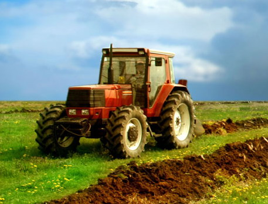

Agricultura Romaniei
România are o suprafață agricolă de 14,8 milioane de hectare, dintre care doar zece milioane sunt ocupate cu terenuri arabile. După o evaluare făcută în noiembrie 2008, aproximativ 6,8 milioane de hectare agricole nu sunt lucrate. Valoarea producției agricole din România a fost de 64,4 miliarde lei în anul 2010.  Producția vegetală a fost în valoare de 43,4 miliarde lei (67,5%), cea animală de 20,4 miliarde lei (31,6%), iar serviciile agricole s-au cifrat la 557,2 milioane lei (0,9%). În anul 2009, valoarea totală a producției agricole a fost de 59,9 miliarde lei (scădere), și de 66,9 miliarde lei în 2008 (creștere 40%)
În anul 2009, România a exportat produse agroalimentare în valoare de 2,1 miliarde de euro și a importat de 3,4 miliarde de euro. În anul 2010, România a avut un deficit extern de peste 700 de milioane de euro la importurile și exporturile de produse agricole. În anul 2011, România a exportat produse agroalimentare în valoare de 2,9 miliarde de euro și a importat de 3,7 miliarde de euro.
Consumul anual de fructe și legume pe cap de locuitor în România este de aproximativ de 70 – 80 de kilograme, în timp ce media europeană atinge 90 – 100 de kilograme.
Agricultura este cel mai vulnerabil sector al economiei românești, aproape 30% din populație lucrând în acest domeniu. Parcelele mici de pământ și eșecul în adoptarea tehnicilor moderne în agricultură înseamnă că producția din fiecare an este dependentă de capriciile vremii.
Una dintre marile probleme ale agriculturii românești este evaziunea fiscală, evaluată la 2,5 miliarde euro anual în anul 2011.